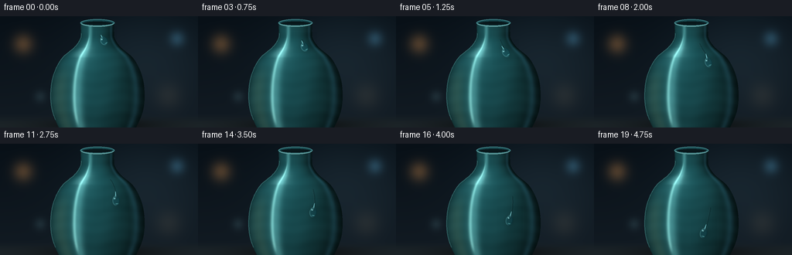
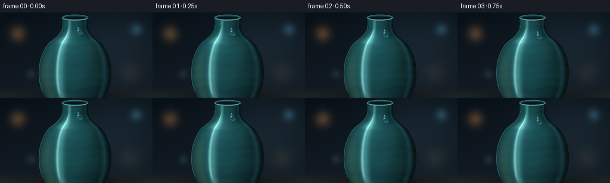

CODING AGENTS AS PIXEL WORLD MODELS
traex/GPT-5.6-Sol · phygen_039
点击播放 · 原生 RGB 像素
此结果可播放，但该运行尚未通过最终提交审核。页面展示不代表评测通过。
逐轮保存的候选
回放视频、检查图与代码变化。
每份候选均可单独播放。实际图片检查记录在下方工具轨迹中。
候选 01播放与检查图
点击播放 · 原生 RGB 像素

展开代码变化
--- 上一保存版本
+++ 本次保存版本
@@ -0,0 +1,270 @@
+from pathlib import Path
+import json
+
+import numpy as np
+from PIL import Image, ImageDraw, ImageFilter
+
+import artifact_io
+
+
+ROOT = Path(__file__).resolve().parent
+SPEC = json.loads((ROOT / "task_spec.json").read_text())
+W, H = int(SPEC["width"]), int(SPEC["height"])
+N = int(SPEC["frames"])
+S = 3 # supersampling
+WW, HH = W * S, H * S
+
+
+def smoothstep(x):
+ x = np.clip(x, 0.0, 1.0)
+ return x * x * (3.0 - 2.0 * x)
+
+
+def hermite_profile(y):
+ """Smooth silhouette radius of a wheel-thrown vase, in output pixels."""
+ ky = np.array([7., 20., 29., 40., 54., 75., 99., 122., 142., 155.])
+ kr = np.array([22., 21.5, 22.5, 30., 46., 57., 61., 59., 51., 43.])
+ tang = np.empty_like(kr)
+ tang[0] = (kr[1] - kr[0]) / (ky[1] - ky[0])
+ tang[-1] = (kr[-1] - kr[-2]) / (ky[-1] - ky[-2])
+ tang[1:-1] = (kr[2:] - kr[:-2]) / (ky[2:] - ky[:-2])
+ idx = np.clip(np.searchsorted(ky, y) - 1, 0, len(ky) - 2)
+ y0, y1 = ky[idx], ky[idx + 1]
+ h = y1 - y0
+ t = np.clip((y - y0) / h, 0, 1)
+ h00 = 2*t**3 - 3*t**2 + 1
+ h10 = t**3 - 2*t**2 + t
+ h01 = -2*t**3 + 3*t**2
+ h11 = t**3 - t**2
+ return h00*kr[idx] + h10*h*tang[idx] + h01*kr[idx+1] + h11*h*tang[idx+1]
+
+
+def build_scene():
+ # Coordinates remain in final-output pixel units despite supersampling.
+ yy, xx = np.mgrid[0:HH, 0:WW].astype(np.float32)
+ x = (xx + .5) / S
+ y = (yy + .5) / S
+
+ # Deep, softly illuminated studio backdrop.
+ vertical = np.clip(y / H, 0, 1)
+ bg = np.zeros((HH, WW, 3), dtype=np.float32)
+ bg[..., 0] = 8 + 10 * vertical
+ bg[..., 1] = 16 + 11 * vertical
+ bg[..., 2] = 23 + 12 * vertical
+ glow = np.exp(-(((x-189)/88)**2 + ((y-52)/70)**2))
+ bg += glow[..., None] * np.array([12, 17, 19], np.float32)
+
+ # Defocused amber and blue practical lights.
+ for bx, by, radius, col, power in [
+ (30, 36, 17, (104, 64, 27), 0.62),
+ (229, 29, 13, (38, 74, 92), 0.52),
+ (218, 103, 22, (62, 47, 30), 0.25),
+ (52, 104, 10, (48, 70, 71), 0.28),
+ ]:
+ d2 = ((x-bx)/radius)**2 + ((y-by)/radius)**2
+ halo = np.exp(-d2 * 1.65) * power
+ bg += halo[..., None] * np.asarray(col, np.float32)
+
+ # Table plane and grounded, soft elliptical shadow.
+ table = smoothstep((y - 125) / 16)
+ table_col = np.stack([18 + 11*vertical, 25 + 12*vertical, 29 + 12*vertical], axis=-1)
+ bg = bg*(1-table[..., None]) + table_col*table[..., None]
+ shadow = np.exp(-(((x-130)/79)**2 + ((y-141)/8.0)**2)) * smoothstep((y-126)/8)
+ bg *= (1 - .52*shadow[..., None])
+
+ cx = 126.0
+ radius = hermite_profile(y)
+ u = (x-cx) / np.maximum(radius, 1)
+ vase = (np.abs(u) <= 1) & (y >= 8) & (y <= 151)
+ z = np.sqrt(np.maximum(0, 1-u*u))
+
+ # Surface normals of a surface of revolution, including shoulder slope.
+ dr = (hermite_profile(y+.12) - hermite_profile(y-.12)) / .24
+ nx = u
+ ny = -dr*z*.65
+ nz = z
+ norm = np.sqrt(nx*nx + ny*ny + nz*nz) + 1e-5
+ nx, ny, nz = nx/norm, ny/norm, nz/norm
+
+ # Cool jade-green ceramic glaze under a large softbox.
+ lx, ly, lz = -.43, -.64, .73
+ ln = (lx*lx+ly*ly+lz*lz)**.5
+ lx, ly, lz = lx/ln, ly/ln, lz/ln
+ diffuse = np.maximum(0, nx*lx + ny*ly + nz*lz)
+ edge = np.clip(1-z, 0, 1)
+ illum = .30 + .59*diffuse - .12*edge
+ ceramic = np.empty_like(bg)
+ base = np.array([34., 102., 108.])
+ ceramic[:] = base
+ ceramic *= illum[..., None]
+
+ # Environmental reflection bands curved around the vessel.
+ left_softbox = np.exp(-((u+.43)/.115)**2) * (.34 + .66*z)
+ left_core = np.exp(-((u+.49)/.037)**2) * smoothstep((y-19)/18) * (1-smoothstep((y-129)/18))
+ cool_rim = np.exp(-((u-.83)/.080)**2) * (.25 + .75*z)
+ warm_bounce = np.exp(-((u+.78)/.16)**2) * smoothstep((y-54)/40)
+ ceramic += left_softbox[..., None] * np.array([42., 61., 59.])
+ ceramic += left_core[..., None] * np.array([59., 73., 68.])
+ ceramic += cool_rim[..., None] * np.array([17., 35., 43.])
+ ceramic += warm_bounce[..., None] * np.array([18., 12., 4.])
+
+ # A restrained glaze texture: smooth and continuous, not grainy.
+ glaze = (np.sin(y*.42 + np.sin(x*.09)*1.4) + np.sin(x*.19+y*.07))*.75
+ glaze += np.sin(y*.13)*.8
+ ceramic += glaze[..., None] * np.array([.8, 1.6, 1.7])
+ ceramic += (np.maximum(0, nx*lx+ny*ly+nz*lz)**28)[..., None] * np.array([47., 57., 55.])
+ ceramic = np.clip(ceramic, 0, 255)
+
+ scene = np.where(vase[..., None], ceramic, bg)
+
+ # Render the dark inner opening, then a porcelain-thick front lip.
+ im = Image.fromarray(np.uint8(np.clip(scene, 0, 255)), "RGB")
+ d = ImageDraw.Draw(im, "RGBA")
+ def box(cx0, cy0, rx, ry):
+ return tuple(int(v*S) for v in (cx0-rx, cy0-ry, cx0+rx, cy0+ry))
+ d.ellipse(box(cx, 8.7, 22.1, 4.8), fill=(8, 23, 27, 255), outline=(62, 125, 129, 255), width=2*S)
+ d.arc(box(cx, 9.2, 21.1, 4.4), 3, 177, fill=(112, 172, 171, 235), width=max(1, S))
+ d.arc(box(cx, 9.2, 21.0, 4.2), 182, 357, fill=(22, 69, 75, 255), width=2*S)
+ # Hairline highlight at the left silhouette.
+ pts = []
+ for py in np.linspace(22, 134, 90):
+ pts.append((int((cx-hermite_profile(np.array(py))+.6)*S), int(py*S)))
+ d.line(pts, fill=(80, 145, 146, 105), width=1*S)
+
+ return np.asarray(im).astype(np.float32), (x, y), cx
+
+
+def path_position(t, cx):
+ # Gravity-driven easing; normalized location arcs over the curved shoulder.
+ s = .075*t + .925*(t**1.30)
+ py = 30.5 + 84.0*s
+ uu = .34 + .135*np.sin(np.pi*t) - .075*t
+ px = cx + float(hermite_profile(np.array(py))) * uu
+ return px, py
+
+
+def add_trail(frame, t, cx):
+ """Fine wet streak connecting recent positions, brightest near the drop."""
+ if t <= .012:
+ return frame
+ im = Image.fromarray(np.uint8(np.clip(frame, 0, 255)), "RGB")
+ overlay = Image.new("RGBA", (WW, HH), (0, 0, 0, 0))
+ od = ImageDraw.Draw(overlay, "RGBA")
+ start = max(0., t-.31)
+ ts = np.linspace(start, max(start, t-.012), 26)
+ pts = [(int(path_position(float(q), cx)[0]*S), int(path_position(float(q), cx)[1]*S)) for q in ts]
+ if len(pts) > 1:
+ # A slight dark refractive side and a sharp reflected edge.
+ dark = [(a+S, b) for a, b in pts]
+ od.line(dark, fill=(3, 24, 29, 90), width=max(2, int(1.15*S)))
+ od.line(pts, fill=(152, 213, 211, 66), width=max(1, int(.65*S)))
+ od.line(pts[len(pts)//2:], fill=(210, 242, 237, 52), width=max(1, int(.34*S)))
+ overlay = overlay.filter(ImageFilter.GaussianBlur(.23*S))
+ im = Image.alpha_composite(im.convert("RGBA"), overlay).convert("RGB")
+ return np.asarray(im).astype(np.float32)
+
+
+def bilinear_sample(image, sx, sy):
+ sx = np.clip(sx, 0, image.shape[1]-1.001)
+ sy = np.clip(sy, 0, image.shape[0]-1.001)
+ x0 = np.floor(sx).astype(np.int32)
+ y0 = np.floor(sy).astype(np.int32)
+ x1, y1 = x0+1, y0+1
+ fx, fy = sx-x0, sy-y0
+ a = image[y0, x0]
+ b = image[y0, x1]
+ c = image[y1, x0]
+ d = image[y1, x1]
+ return (a*(1-fx)[..., None]*(1-fy)[..., None] +
+ b*fx[..., None]*(1-fy)[..., None] +
+ c*(1-fx)[..., None]*fy[..., None] +
+ d*fx[..., None]*fy[..., None])
+
+
+def add_droplet(frame, t, cx):
+ px, py = path_position(t, cx)
+ # Tangent of trajectory establishes the downward-pointing teardrop axis.
+ eps = .004
+ p0 = path_position(max(0, t-eps), cx)
+ p1 = path_position(min(1, t+eps), cx)
+ vx, vy = p1[0]-p0[0], p1[1]-p0[1]
+ mag = max(.001, (vx*vx+vy*vy)**.5)
+ vx, vy = vx/mag, vy/mag
+ # p points to local right, q points along travel.
+ perpx, perpy = vy, -vx
+ stretch = .35 + .65*smoothstep((t-.05)/.45)
+ half_len = 5.9 + 1.0*stretch
+ half_w = 5.15 - .25*stretch
+ tail_len = 5.5 + 5.0*stretch
+
+ margin = 17
+ xa = max(0, int((px-margin)*S)); xb = min(WW, int((px+margin)*S)+1)
+ ya = max(0, int((py-margin)*S)); yb = min(HH, int((py+margin)*S)+1)
+ gy, gx = np.mgrid[ya:yb, xa:xb].astype(np.float32)
+ ox = (gx+.5)/S - px
+ oy = (gy+.5)/S - py
+ p = ox*perpx + oy*perpy
+ q = ox*vx + oy*vy
+
+ # Round leading bulb plus a narrowing tail, merged analytically.
+ fb = np.sqrt((p/half_w)**2 + ((q-1.4)/half_len)**2)
+ bulb = np.clip((1.0-fb)*5.0, 0, 1)
+ tq = np.clip((q+tail_len)/(tail_len+1.8), 0, 1)
+ tail_width = .38 + 3.15*(tq**1.60)
+ ft = np.abs(p)/tail_width
+ tail = np.clip((1-ft)*3.0, 0, 1)
+ tail *= smoothstep((q+tail_len+.4)/.8) * (1-smoothstep((q+1.7)/.8))
+ alpha = np.maximum(bulb, tail)
+
+ patch = frame[ya:yb, xa:xb].copy()
+ # Cast shadow / contact darkening makes the drop sit on the ceramic.
+ sh = np.exp(-(((p-1.0)/6.2)**2 + ((q-2.3)/8.0)**2)) * (1-alpha)
+ patch *= (1-.14*sh[..., None])
+
+ # Refraction: magnify the ceramic beneath and displace it toward the tail.
+ src_ox = ox*.72 - vx*.65 + perpx*p*.025
+ src_oy = oy*.72 - vy*.65 + perpy*p*.025
+ refr = bilinear_sample(frame, (px+src_ox)*S, (py+src_oy)*S)
+ refr = refr*np.array([.92, 1.035, 1.055]) + np.array([1.5, 5.0, 7.0])
+ patch = patch*(1-(alpha*.68)[..., None]) + refr*(alpha*.68)[..., None]
+
+ # Glassy perimeter: a bright incident-light edge and darker far edge.
+ inner_edge = alpha * np.clip((fb-.70)/.30, 0, 1)
+ lit_side = np.clip(.58 - p/half_w - .11*q/half_len, 0, 1)
+ dark_side = np.clip(.40 + p/half_w + .15*q/half_len, 0, 1)
+ patch += (inner_edge*lit_side)[..., None] * np.array([78., 98., 96.])
+ patch -= (inner_edge*dark_side)[..., None] * np.array([21., 25., 22.])
+
+ # Focused pin-light and crescent caustic at the leading edge.
+ glint = np.exp(-(((p+2.0)/1.10)**2 + ((q+1.65)/1.35)**2)*2.0) * alpha
+ glint2 = np.exp(-(((p+1.1)/.46)**2 + ((q+1.25)/.56)**2)*2.0) * alpha
+ caustic = np.exp(-(((p-1.0)/2.4)**2 + ((q-5.45)/.72)**2)*1.7) * alpha
+ patch += glint[..., None]*np.array([135., 158., 153.])
+ patch += glint2[..., None]*np.array([150., 164., 155.])
+ patch += caustic[..., None]*np.array([66., 91., 87.])
+
+ # Tiny top highlight continuing into the tapered tail.
+ tailshine = tail*np.exp(-((p+.15)/.48)**2)*np.clip((-q)/(tail_len*.7), 0, 1)
+ patch += tailshine[..., None]*np.array([48., 72., 72.])
+ frame[ya:yb, xa:xb] = np.clip(patch, 0, 255)
+ return frame
+
+
+def generate():
+ base, _, cx = build_scene()
+ frames = []
+ for i in range(N):
+ t = i / (N-1)
+ frame = base.copy()
+ frame = add_trail(frame, t, cx)
+ frame = add_droplet(frame, t, cx)
+ small = Image.fromarray(np.uint8(np.clip(frame, 0, 255)), "RGB").resize(
+ (W, H), Image.Resampling.LANCZOS
+ )
+ frames.append(np.asarray(small, dtype=np.uint8))
+ return np.stack(frames)
+
+
+if __name__ == "__main__":
+ artifact_io.save(generate(), ROOT)
+
候选 02播放与检查图
点击播放 · 原生 RGB 像素


展开代码变化
--- 上一保存版本
+++ 本次保存版本
@@ -118,7 +118,7 @@
scene = np.where(vase[..., None], ceramic, bg)
# Render the dark inner opening, then a porcelain-thick front lip.
- im = Image.fromarray(np.uint8(np.clip(scene, 0, 255)), "RGB")
+ im = Image.fromarray(np.uint8(np.clip(scene, 0, 255)))
d = ImageDraw.Draw(im, "RGBA")
def box(cx0, cy0, rx, ry):
return tuple(int(v*S) for v in (cx0-rx, cy0-ry, cx0+rx, cy0+ry))
@@ -147,7 +147,7 @@
"""Fine wet streak connecting recent positions, brightest near the drop."""
if t <= .012:
return frame
- im = Image.fromarray(np.uint8(np.clip(frame, 0, 255)), "RGB")
+ im = Image.fromarray(np.uint8(np.clip(frame, 0, 255)))
overlay = Image.new("RGBA", (WW, HH), (0, 0, 0, 0))
od = ImageDraw.Draw(overlay, "RGBA")
start = max(0., t-.31)
@@ -258,7 +258,7 @@
frame = base.copy()
frame = add_trail(frame, t, cx)
frame = add_droplet(frame, t, cx)
- small = Image.fromarray(np.uint8(np.clip(frame, 0, 255)), "RGB").resize(
+ small = Image.fromarray(np.uint8(np.clip(frame, 0, 255))).resize(
(W, H), Image.Resampling.LANCZOS
)
frames.append(np.asarray(small, dtype=np.uint8))
可观测工具轨迹
实际执行的命令与返回图片。
命令 1exit 0
/bin/bash -lc "cat prompt.txt && printf '\\n--- GENERATION_RULES.md ---\\n' && cat GENERATION_RULES.md && printf '\\n--- task_spec.json ---\\n' && cat task_spec.json"
命令 2exit 0
/bin/bash -lc "find . -maxdepth 3 -type f -printf '%p\\n' | sort && printf '\\n--- executables ---\\n' && command -v ffmpeg || true; command -v blender || true; command -v python3 || true"
命令 3exit 0
/bin/bash -lc 'cat artifact_io.py'
命令 4exit 0
/bin/bash -lc "python3 generate.py && python3 - <<'PY'
import numpy as np
from PIL import Image
z=np.load('pixels.npz')['pixels']
print('pixels', z.shape, z.dtype)
for i in [0,4,8,12,16,19]:
im=np.array(Image.open(f'frames/{i:02d}.png'))
print(i, im.shape, im.dtype, im.min(), im.max(), round(float(im.mean()),2))
PY"命令 5exit 0
/bin/bash -lc "python3 - <<'PY'
import numpy as np
from PIL import Image
fs=np.stack([np.asarray(Image.open(f'frames/{i:02d}.png')).astype(int) for i in range(20)])
d=np.abs(np.diff(fs,axis=0))
print('per-transition changed pixels:', [int((x.max(2)>3).sum()) for x in d])
print('per-transition mean abs:', [round(float(x.mean()),3) for x in d])
print('first-last changed:', int((np.abs(fs[-1]-fs[0]).max(2)>3).sum()))
PY"命令 6exit 0
/bin/bash -lc "python3 generate.py && python3 - <<'PY'
from pathlib import Path
import json, numpy as np
from PIL import Image
spec=json.loads(Path('task_spec.json').read_text())
frames=np.stack([np.asarray(Image.open(f'frames/{i:02d}.png')) for i in range(spec['frames'])])
assert frames.shape==(20,144,256,3), frames.shape
assert frames.dtype==np.uint8
assert len(list(Path('frames').glob('*.png')))==20
with np.load('pixels.npz') as z:
p=z['pixels']; assert p.shape==(144,256,20) and p.dtype==np.uint32
assert Path('index.html').stat().st_size>10000
print('validation passed:', frames.shape, frames.dtype)
print('outputs:', {x:Path(x).stat().st_size for x in ['pixels.npz','index.html','inspection.png','transition_check.png']})
PY"保存候选 2 份；完成命令 6 次；可验证图片返回 0 张。原始 API 响应与完整日志保留在本地。